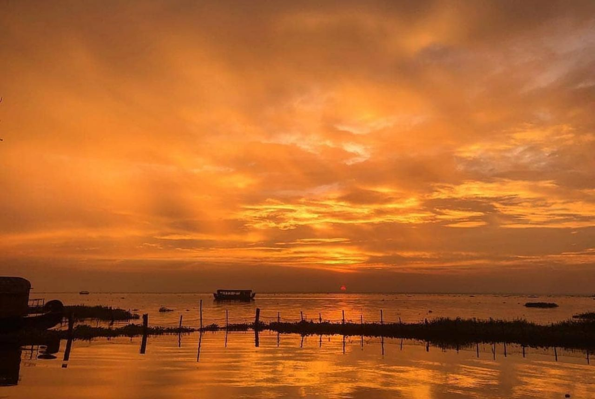
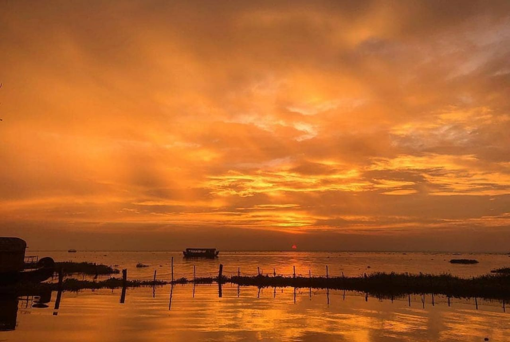

1.Mamburam
A famous Muslim Pilgrimage in the Malappuram district, Mamburam is a shrine dedicated to the dead bodies of some of the primary Thangals of Kerala. It was a title given to the Arabs from Yemen who scattered from there and migrated to Kerala.

2.Kadalundi bird sanctuary
The Kadalundi Bird Sanctuary or the Kadalundi Nagaram, is definitely one of the best places to visit in Malappuram. It sits right at the spot where River Kadalundi Puzha flows into the Arabian Sea.Easily accessible from Malappuram and Kozhikode, the bird sanctuary is host to about 100 species of native birds, and about 60 species of migratory birds.

3. Bharathapuzha river
The River of Bharata, also known as Nila, the Bharathapuzha River is a west-flowing river in the state of Kerala, and is the second longest river in the state. The river has been an integral part of life in the southern regions of Malabar. The name Nila has been given to the river to show the importance of it being more than just a river, as there are several mentions of the river in the ancient Hindu scriptures.

4.Angadipuram temple
Angadipuram Temple, also known as Angadipuram Thirumandhamkunnu Bhagavathy or Bhadrakali Temple, is located in the city of the same name, which was once the capital of Valluvanad kingdom. Dedicated to Thirumandhamkunnil amma who was the mother goddess of the kings of the empire.

5. Kadampuzha temple
Kadampuzha Temple, one of the ancient temples of the district is situated in the remote town named Melmuri of Tirur taluk. Despite the fact that there is no recorded proof for the development of this sanctuary however a solid conviction expresses that it was built by Jagadguru Shri Shankara Acharya of Kalady. The fundamental god revered in the sanctuary is Goddess Kadampuzha, a manifestation of Goddess Parvati, wife of Lord Shiva.
 
